소방시설관리사 (2022-05-21 기출문제)
1과목: 방안전관리론
1. 가연물이 점화원과 접촉했을 때 연소가 시작되는 최저온도는?
- 발화점
- 연소점
- 인화점
- 산화점
(정답률: 알수없음)

2. 표준상태에서 5 mol의 부탄가스(C4H10)가 완전연소를 하는데 요구되는 산소(O2)의 부피(m3)는?
- 0.728
- 0.828
- 728
- 828
(정답률: 알수없음)
3. 화재 시 물질의 비열과 증발잠열을 활용하여 소화하는 방법은?
- 냉각소화
- 제거소화
- 질식소화
- 억제소화
(정답률: 알수없음)
4. 연소속도보다 가스 분출속도가 클 때, 주위에 공기유동이 심하여 불꽃이 노즐에서 떨어진 후 꺼지는 현상은?
- 백파이어(Back fire)
- 링파이어(Ring fire)
- 블로우오프(Blow off)
- 롤오버(Roll over)
(정답률: 알수없음)
5. 다음에서 설명하는 화재현상은?
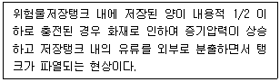
- 보일오버(Boil over)
- 슬롭오버(Slop over)
- 프로스오버(Froth over)
- 오일오버(Oil over)
(정답률: 알수없음)
6. 분진폭발에 관한 설명으로 옳은 것을 모두 고른 것은?
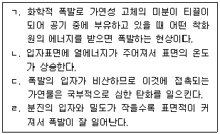
- ㄱ
- ㄱ, ㄴ
- ㄱ, ㄴ, ㄷ
- ㄱ, ㄴ, ㄷ, ㄹ
(정답률: 알수없음)
7. 화재의 분류에 관한 설명으로 옳은 것을 모두 고른 것은?
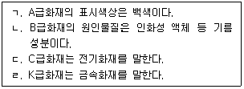
- ㄱ, ㄷ
- ㄴ, ㄹ
- ㄱ, ㄴ, ㄷ
- ㄱ, ㄴ, ㄷ, ㄹ
(정답률: 알수없음)
8. 폭연과 폭굉에 관한 설명으로 옳지 않은 것은?
- 폭연의 충격파 전파 속도는 음속보다 느리다.
- 폭굉은 파면에서 온도, 압력, 밀도가 연속적으로 나타난다.
- 폭연은 폭굉으로 전이될 수 있다.
- 폭굉의 폭발반응은 충격파에너지에 의한 화학반응에 의해 전파되어 가는 현상이다.
(정답률: 알수없음)
9. 플래시오버(Flash over)와 백드래프트(Back draft)에 관한 설명으로 옳지 않은 것은?
- 플래시오버는 층 전체가 순식간에 화염에 휩싸이면서 모든 공간을 통하여 입체적으로 확대되는 현상이다.
- 백드래프트는 밀폐된 공간에서 화재가 발생하여 산소농도 저하로 불꽃을 내지 못하고 가연물질의 열분해에 의해 발생된 가연성 가스가 축적되면서 갑자기 유입된 신선한 공기로 급격히 연소가 활발해진다.
- 플래시오버의 방지대책으로 가연물의 양을 제한하는 방법이 있다.
- 백드래프트가 발생하는 주요 원인은 복사열이다.
(정답률: 알수없음)
10. 건축물의 피난ㆍ방화구조 등의 기준에 관한 규칙상 발코니의 바닥에 국토교통부령으로 정하는 하향식 피난구의 설치기준으로 옳지 않은 것은?
- 피난구의 덮개는 품질시험을 실시한 결과 비차열 1시간 이상의 내화성능을 가져야 할 것
- 피난구의 유효 개구부 규격은 직경 50센티미터 이상일 것
- 상층ㆍ하층간 피난구의 수평거리는 15센티미터 이상 떨어져 있을 것
- 사다리는 바로 아래층의 바닥면으로부터 50센티미터 이하까지 내려오는 길이로 할 것
(정답률: 알수없음)
11. 건축물의 피난ㆍ방화구조 등의 기준에 관한 규칙상 내화구조로 옳지 않은 것은?
- 외벽 중 비내력벽인 경우에는 철근콘크리트조로서 두께가 7센티미터 이상인 것
- 기둥의 경우에는 그 작은 지름이 20센티미터 이상인 것으로서 철근콘크리트조인 것(고강도 콘크리트를 사용하는 경우가 아님)
- 바닥의 경우에는 철근콘크리트조로서 두께가 10센티미터 이상인 것
- 보의 경우에는 철근콘크리트조인 것(고강도 콘크리트를 사용하는 경우가 아님)
(정답률: 알수없음)
12. 건축물의 피난ㆍ방화구조 등의 기준에 관한 규칙 및 건축법령상 피난 및 방화구조 등에 관한 내용으로 옳은 것은?
- 시멘트모르타르 위에 타일을 붙인 것으로서 그 두께의 합계가 2센티미터 이상인 것은 방화구조이다.
- 초고층 건축물에는 피난층 또는 지상으로 통하는 직통계단과 직접 연결되는 피난안전구역을 지상층으로부터 최대 30개 층마다 1개소 이상 설치하여야 한다.
- 소방관 진입창의 기준은 창문의 가운데에 지름 20센티미터 이상의 사각형을 야간에도 알아볼 수 있도록 빛 반사 등으로 붉은 색으로 표시할 것
- 지하층의 비상탈출구는 지하층의 바닥으로부터 비상탈출구의 아랫부분까지의 높이가 1.2미터 이상이 되는 경우에는 벽체에 발판의 너비가 15센티미터 이상인 사다리를 설치할 것
(정답률: 알수없음)
13. 건축물의 피난ㆍ방화구조 등의 기준에 관한 규칙상 특별피난계단의 구조에 관한 설명으로 옳지 않은 것은?
- 계단실의 노대 또는 부속실에 접하는 창문 등(출입구를 제외한다)은 망이 들어 있는 유리의 붙박이창으로서 그 면적을 각각 2제곱미터 이하로 할 것
- 노대 및 부속실에는 계단실외의 건축물의 내부와 접하는 창문 등(출입구를 제외한다)을 설치하지 아니할 것
- 출입구의 유효너비는 0.9미터 이상으로 하고 피난의 방향으로 열 수 있을 것
- 계단은 내화구조로 하되, 피난층 또는 지상까지 직접 연결되도록 할 것
(정답률: 알수없음)
14. 건축법령상 대지 안의 피난 및 소화에 필요한 통로 설치에 관하여 ( )에 들어갈 내용으로 옳은 것은?
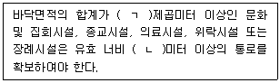
- ㄱ: 300, ㄴ: 2
- ㄱ: 300, ㄴ: 3
- ㄱ: 500, ㄴ: 2
- ㄱ: 500, ㄴ: 3
(정답률: 알수없음)
15. 다음에서 설명하는 건축물의 화재 시 인간의 피난행동 특성은?
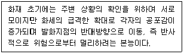
- 귀소 본능
- 추종 본능
- 퇴피 본능
- 지광 본능
(정답률: 알수없음)
16. 화재 시 인간의 피난행동 특성을 고려하여 혼란을 최소화하는 건축물 피난계획의 일반적인 원칙에 관한 설명으로 옳지 않은 것은?
- 피난경로 중 한 방향이 화재 등의 재난으로 사용할 수 없을 경우에 다른 방향이 사용되도록 고려하는 페일 세이프(fail safe) 원칙이 필요하다.
- 피난설비는 이동식 기구와 이동식 장치(피난기구) 등이 원칙이며, 고정시설은 탈출에 늦은 소수 사람에 대한 극히 예외적인 보조 수단으로 고려한다.
- 피난경로에 따라 일정 구역을 한정하여 피난 존으로 설정하고, 최종 안전한 피난 장소 쪽으로 진행됨에 따라 각 존의 안전성을 높인다.
- 피난로에는 정전 시에도 피난방향을 명백히 확인 할 수 있는 표시를 한다.
(정답률: 알수없음)
17. 공간(가로 10 m, 세로 30 m, 높이 5 m)에 목재 1,000 kg과 가연성 A물질 2,000 kg이 적재되어 있는 경우 완전연소 하였을 때 화재하중은 약 몇 kg/m2인가? (단, 목재의 단위 발열량은 4,500 kcal/kg, 가연성 A물질의 단위 발열량은 3,000 kJ/kg이다.)
- 0.88
- 2.60
- 4.40
- 6.32
(정답률: 알수없음)
18. 목조건축물과 비교한 내화건축물의 화재 특성에 관한 설명으로 옳은 것은?
- 화염의 분출면적이 크고, 복사열이 커서 접근하기 어렵다.
- 횡방향보다 종방향의 화재성장이 빠르다.
- 최성기에 도달하는 시간이 빠르다.
- 저온장기형의 특성을 갖는다.
(정답률: 알수없음)
19. 고체 가연물의 연소방식으로 옳지 않은 것은?
- 분무연소
- 분해연소
- 작열연소
- 증발연소
(정답률: 알수없음)
20. 연소속도를 결정하는 인자로 옳지 않은 것은?
- 비중량
- 산소농도
- 촉매
- 온도
(정답률: 알수없음)
21. 열전달 방법 중 복사에 관한 설명으로 옳지 않은 것은?
- 물질에서 방사되는 에너지가 전자기적인 파동에 의해 전달되는 현상이다.
- 진공상태에서는 손실이 없으며, 공기 중에서도 거의 손실이 없다.
- 복사열은 절대온도 제곱에 비례하고, 열전달 면적에 반비례한다.
- 스테판-볼츠만 법칙이 적용된다.
(정답률: 알수없음)
22. 구획실에서 10 m 직경의 크기를 갖는 화재가 발생하였다. 화재 방출열량이 200 MW 일 때 화재중심에서 수평방향으로 25 m 떨어진 한 지점으로 전달되는 복사열량(kW/m2)은? (단, 거리 감소에 의한 복사에너지는 30 %가 전달되는 것으로 하고, π≒3.14로 하고, 소수점 이하 셋째자리에서 반올림한다.)
- 3.82
- 7.64
- 25.48
- 50.96
(정답률: 알수없음)
23. 다음에서 설명하는 연소생성물은?
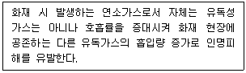
- CO
- CO2
- H2S
- CH2CHCHO
(정답률: 알수없음)
24. 연기 제어방법 중 희석에 관한 설명으로 옳은 것은?
- 희석에 의한 연기제어는 연기를 외부로만 내보내는 것이다.
- 스모크샤프트를 설치하여 제어하는 방법이다.
- 출입문이나 벽을 이용하여 장소 간 압력차를 이용한 방법이다.
- 신선한 다량의 공기를 유입하여 연기생성물을 위험수준 이하로 유지한다.
(정답률: 알수없음)
25. 화재 시 고층빌딩에서 연기가 이동하는 주요 요소로 옳지 않은 것은?
- 역화현상
- 온도상승에 의한 공기의 팽창
- 굴뚝효과
- 건물 내 기류에 의한 강제이동
(정답률: 알수없음)
2과목: 소방수리학·약제화학 및 소방전
26. 유체의 점성계수가 0.8 poise 이고 비중이 1.1일 때 동점성계수(ν) 는 약 몇 stokes 인가?
- 0.088
- 0.727
- 0.880
- 7.270
(정답률: 알수없음)
27. 지상의 유체에 관한 설명으로 옳지 않은 것은?
- 유체는 공간상으로 넓게 떨어져 있는 원자들로 구성되어 있으나 물질의 원자적 본질을 무시하고 구멍이 없는 연속체로 볼 수 있다.
- 주어진 온도에서 순수 물질이 상변화를 하는 압력을 포화 압력이라 한다.
- 중력장 내에서 시스템의 고도에 따른 결과로 시스템이 보유하는 에너지를 위치에너지라 한다.
- 기체상수R은 특정한 이상기체에 대하여 정해져 있으며, 이상기체에서의 음속은 압력의 함수이다.
(정답률: 알수없음)
28. 베르누이 방정식의 가정조건으로 옳지 않은 것은?
- 동일한 유선을 따르는 흐름이다.
- 압축성 유체의 흐름이다.
- 정상상태의 흐름이다.
- 마찰이 없는 흐름이다.
(정답률: 알수없음)
29. 가로 8 m, 세로 8 m, 높이 3 m인 실내의 절대압력이 100 kPa, 온도가 25℃ 이다. 실내 공기의 질량은 약 몇 kg 인가? (단, 공기의 기체상수 R=0.287 kPaㆍm3/kgㆍK 이다.)
- 1.17
- 224.49
- 348.43
- 2,675.96
(정답률: 알수없음)
30. 수평면과 상방향으로 45° 경사를 갖는 지름 250 mm 인 원관에서 유출하는 물의 평균 유출속도가 9.8 m/s 이다. 원관의 출구로부터 물의 최대 수직상승 높이는 약 몇 m 인가?
- 0.25
- 0.49
- 2.45
- 4.90
(정답률: 알수없음)
31. 내경이 250 mm 인 원관을 통해 비압축성 유체가 흐르고 있다. 체적 유량이 40 ℓ/s 일 때, 레이놀즈수(Re)는 약 얼마인가? (단, 동점성계수는 0.120×10-3m2/s 이다.)
- 1,698
- 2,084
- 3,396
- 4,168
(정답률: 알수없음)
32. 유체가 원관을 층류로 흐를 때 발생하는 마찰손실계수에 관한 설명으로 옳은 것은?
- 레이놀즈수의 함수이다.
- 레이놀즈수와 상대조도의 함수이다.
- 마하수와 코시수의 함수이다.
- 상대조도와 오일러수의 함수이다.
(정답률: 알수없음)
33. 물이 내경 200 mm 인 직선 원관에 평균유속 3 m/s 로 80 m 를 유하할 때 손실수두는 약 몇 m 인가? (단, 관마찰계수 f=0.042 이다)
- 1.54
- 2.57
- 5.14
- 7.71
(정답률: 알수없음)
34. 회전펌프의 장단점으로 옳지 않은 것은?
- 소용량, 고양정, 고점도 액체의 수송이 가능하다.
- 송출량의 맥동이 없고 구조가 간단하다.
- 흡입양정이 적다.
- 행정의 조절로 토출량을 조절할 수 있다.
(정답률: 알수없음)
35. 화재 종류에 따른 소화약제의 적응성에 관한 내용으로 옳지 않은 것은?
- A 급 화재의 경우 수성막포를 사용하여 질식 효과로 소화할 수 있다.
- B 급 화재의 경우 물을 사용하여 부촉매 효과로 소화할 수 있다.
- C급 화재의 경우 ABC급 분말을 사용하여 부촉매 효과로 소화할 수 있다.
- K 급 화재의 경우 강화액을 사용하여 냉각 효과로 소화할 수 있다.
(정답률: 알수없음)
36. 이산화탄소 소화약제의 저장용기 설치 기준으로 옳지 않은 것은?
- 저장용기의 충전비는 고압식은 1.5이상 1.9이하로 할 것.
- 저장용기의 충전비는 저압식은 1.1이상 1.4이하로 할 것.
- 저압식 저장용기에는 액면계 및 압력계와 1.9 MPa 이상 1.5 MPa 이하의 압력에서 작동하는 압력경보장치를 설치할 것.
- 저장용기는 고압식은 25 MPa 이상, 저압식은 3.5 MPa 이상의 내압시험압력에 합격한 것으로 할 것.
(정답률: 알수없음)
37. 가연물질이 부탄(Butane)인 경우 이산화탄소의 최소소화농도(vol %)와 최소설계농도(vol %)를 순서대로 옳게 나열한 것은?
- 24, 34
- 28, 34
- 34, 41
- 38, 41
(정답률: 알수없음)
38. 할로겐화합물 및 불활성기체 소화약제의 종류 중 HFC 계열로 옳지 않은 것은?
- CHF3
- CHF2CF3
- CHClFCF3
- CF3CHFCH3
(정답률: 알수없음)
39. 포 소화약제의 혼합장치 설치 방식 중 펌프와 발포기의 중간에 설치된 벤추리관의 벤추리작용에 따라 포 소화약제를 흡입ㆍ혼합하는 방식으로 옳은 것은?
- 라인 푸로포셔너방식
- 펌프 푸로포셔너방식
- 압축공기포 믹싱챔버방식
- 프레져사이드 푸로포셔너방식
(정답률: 알수없음)
40. 표준 상태에서 0℃의 얼음 1g 이 0℃ 물로 변화하는데 필요한 용융열(cal/g)은 약 얼마인가?
- 23.4
- 24.9
- 30.1
- 79.7
(정답률: 알수없음)
41. 할로겐화합물 및 불활성기체 소화약제의 최대허용설계농도로 옳지 않은 것은?
- HCFC-124 : 1.0%
- HFC-236fa : 12.5%
- IG-100 : 30%
- HFC-23 : 30%
(정답률: 알수없음)
42. 분말소화약제의 저장용기 설치 기준으로 옳은 것은?
- 저장용기에는 가압식은 최고사용압력의 2.5배 이하, 축압식은 용기의 내압시험압력의 0.8배 이하의 압력에서 작동하는 안전밸브를 설치할 것.
- 제1종 분말 소화약제 1 kg당 저장용기의 내용적은 0.8ℓ로 하고 저장용기의 충전비는 0.8이상으로 할 것.
- 제2종 분말 소화약제 1 kg당 저장용기의 내용적은 1.25ℓ로 하고 저장용기의 충전비는 0.8이상으로 할 것.
- 제3종 분말 소화약제 1 kg 당 저장용기의 내용적은 1 ℓ로 하고 저장용기의 충전비는 1.1이상으로 할 것.
(정답률: 알수없음)
43. 그림과 같은 전압파형의 평균값(V)은 얼마인가?
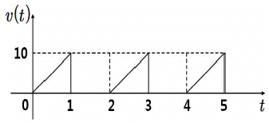
- 2.5
- 3.5
- 4.0
- 5.0
(정답률: 알수없음)
44. 전자장 해석을 위한 미분연산에 관한 설명 중 옳지 않은 것은?
- 벡터계의 미분계산에는 미분연산자 ∇(델)을 사용한다.
- ∇V는 스칼라 함수 V의 변화율(경도)을 의미한다.
- 벡터 E 의 발산은 단위 체적에서 발산하는 선속수를 의미하며, ∇2·E 로 표시한다.
- ∇∙∇ 을 라플라시안이라 부른다.
(정답률: 알수없음)
45. 자계에 관한 설명으로 옳지 않은 것은?
- 도체의 운동에 의한 전자유도현상에 의해 발생되는 유도기전력의 방향은 플레밍의 왼손법칙에 따라 결정된다.
- 자계의 크기나 자성체 내부의 자기적인 상태를 나타내기 위하여 자속의 방향에 수직인 단위 면적을 통과하는 자속의 수를 자속밀도라 한다.
- 자석 사이에 작용하는 힘을 양적으로 취급하는데 전계에서와 같이 쿨롱의 법칙을 이용한다.
- 암페어의 주회법칙은 전류에 의한 자계의 세기를 구하는데 사용한다.
(정답률: 알수없음)
46. 소방시설도시기호 중 비상분전반에 해당하는 기호는?
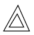
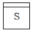
(정답률: 알수없음)
47. 2 대의 단상변압기로 3 상 전력을 얻는 V 결선 방식의 이용률은 약 몇 % 인가?
- 22.9
- 33.3
- 57.7
- 86.6
(정답률: 알수없음)
48. 그림과 같은 RLC 직렬회로에서 v(t) 의 실효값이 220 V 일 때, 회로에 흐르는 실효전류(A)는 얼마인가?
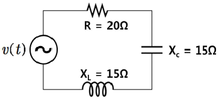
- 4.4
- 6.3
- 7.3
- 11.0
(정답률: 알수없음)
49. 그림과 같은 T 형 회로의 임피던스 파라미터 중 옳지 않은 것은?
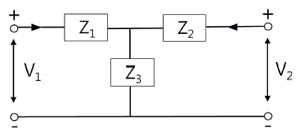
- Z11 = Z1 + Z3
- Z12 = Z1
- Z21 = Z3
- Z22 = Z2 + Z3
(정답률: 알수없음)
50. 그림과 같은 피드백제어계 블록선도의 전달함수는?
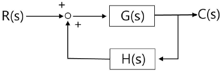
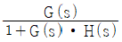
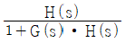
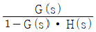
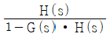
(정답률: 알수없음)
3과목: 소방관련법령
51. 소방기본법령상 소방자동차 전용구역에 관한 설명으로 옳은 것은?
- 소방자동차 전용구역 노면표지 도료의 색채는 백색을 기본으로 하되, 문자(P, 소방차 전용)는 황색으로 표시한다.
- 세대수가 80세대인 아파트의 건축주는 소방자동차 전용구역을 설치하여야 한다.
- 전용구역 노면표지의 외곽선은 빗금무늬로 표시하되, 빗금은 두께를 30센티미터로 하여 50센티미터 간격으로 표시한다.
- 전용구역에 차를 주차하거나 전용구역에의 진입을 가로막는 등의 방해행위를 한 자에게는 200만원 이하의 과태료를 부과한다.
(정답률: 알수없음)
52. 소방기본법령상 소방지원활동으로 명시되지 않은 것은?
- 산불에 대한 예방ㆍ진압 등 지원
- 단전사고 시 비상전원 또는 조명의 공급 지원
- 자연재해에 따른 급수ㆍ배수 및 제설 등 지원
- 집회ㆍ공연 등 각종 행사 시 사고에 대비한 근접대기 등 지원
(정답률: 알수없음)
53. 소방기본법령상 벌칙에 관한 설명이다. ( )에 들어갈 내용으로 옳은 것은?
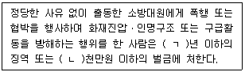
- ㄱ: 3, ㄴ: 3
- ㄱ: 3, ㄴ: 5
- ㄱ: 5, ㄴ: 3
- ㄱ: 5, ㄴ: 5
(정답률: 알수없음)
54. 소방기본법령상 화재예방, 소방활동 또는 소방훈련을 위하여 사용되는 소방신호의 종류로 명시되지 않은 것은?
- 발화신호
- 위기신호
- 해제신호
- 훈련신호
(정답률: 알수없음)
55. 소방시설공사업법령상 소방시설별 하자보수 보증기간이 3년으로 규정되어 있는 소방시설을 모두 고른 것은?
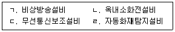
- ㄱ, ㄴ
- ㄱ, ㄷ
- ㄴ, ㄹ
- ㄷ, ㄹ
(정답률: 알수없음)
56. 소방시설공사업법령상 착공신고를 한 공사업자가 변경신고를 하여야 하는 경우에 해당하지 않는 것은?
- 시공자가 변경된 경우
- 소방시설공사 기간이 변경된 경우
- 설치되는 소방시설의 종류가 변경된 경우
- 책임시공 및 기술관리 소방기술자가 변경된 경우
(정답률: 알수없음)
57. 소방시설공사업법령상 도급과 관련된 내용으로 옳은 것은?
- 공사업자가 도급받은 소방시설공사의 도급금액 중 그 공사(하도급한 공사를 포함한다)의 근로자에게 지급하여야 할 임금에 해당하는 금액은 그 반액(半額)까지 압류할 수 있다.
- 하수급인은 하도급받은 소방시설공사를 제3자에게 다시 하도급할 수 없다. 다만 시공의 경우에는 대통령령으로 정하는 바에 따라 하도급받은 소방시설공사의 일부를 다른 공사업자에게 하도급할 수 있다.
- 공사금액이 10억원 이상인 소방시설공사의 발주자는 하수급인의 시공 및 수행능력, 하도급계약의 적정성 등을 심사하기 위하여 하도급계약심사위원회를 두어야 한다.
- 특정소방대상물의 관계인 또는 발주자는 해당 도급계약의 수급인이 정당한 사유 없이 30일 이상 소방시설공사를 계속하지 아니하는 경우 도급계약을 해지할 수 있다.
(정답률: 알수없음)
58. 화재예방, 소방시설 설치ㆍ유지 및 안전관리에 관한 법령상 소방시설등의 자체점검에 관한 설명이다. ( )에 들어갈 내용으로 옳은 것은?
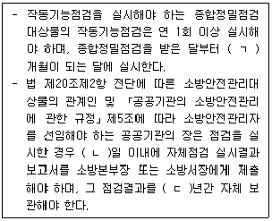
- ㄱ: 3, ㄴ: 14, ㄷ: 1
- ㄱ: 6, ㄴ: 7, ㄷ: 1
- ㄱ: 6, ㄴ: 7, ㄷ: 2
- ㄱ: 6, ㄴ: 14, ㄷ: 2
(정답률: 알수없음)
59. 화재예방, 소방시설 설치ㆍ유지 및 안전관리에 관한 법령상 임시소방시설에 해당하는 것은?
- 간이완강기
- 공기호흡기
- 간이피난유도선
- 비상콘센트설비
(정답률: 알수없음)
60. 화재예방, 소방시설 설치ㆍ유지 및 안전관리에 관한 법령상 특정소방대상물 중 업무시설이 아닌 것은?
- 마을회관
- 우체국
- 보건소
- 소년분류심사원
(정답률: 알수없음)
61. 화재예방, 소방시설 설치ㆍ유지 및 안전관리에 관한 법령상 건축허가등의 동의대상물에 해당하는 것은?
- 수련시설로서 연면적이 200제곱미터인 건축물
- 「정신건강증진 및 정신질환자 복지서비스 지원에 관한 법률」에 따른 정신의료기관으로서 연면적이 200제곱미터인 건축물
- 「장애인복지법」에 따른 장애인 의료재활시설로서 연면적이 200제곱미터인 건축물
- 승강기 등 기계장치에 의한 주차시설로서 자동차 10대 이하를 주차할 수 있는 시설
(정답률: 알수없음)
62. 화재예방, 소방시설 설치ㆍ유지 및 안전관리에 관한 법령상 특정소방대상물의 관계인이 간이스프링클러 설비를 설치하여야 하는 대상이 아닌 것은?
- 입원실이 없는 의원으로서 연면적 600 m2 미만인 시설
- 조산원으로서 연면적 600 m2 미만인 시설
- 교육연구시설 내에 합숙소로서 연면적 100 m2 이상인 것
- 숙박시설 중 생활형 숙박시설로서 해당 용도로 사용되는 바닥면적의 합계가 600 m2 이상인 것
(정답률: 알수없음)
63. 화재예방, 소방시설 설치ㆍ유지 및 안전관리에 관한 법령상 소방기술심의위원회에 관한 설명으로 옳은 것은?
- 중앙위원회는 성별을 고려하여 위원장을 포함한 21명 이내의 위원으로 구성한다.
- 중앙위원회 위원 중 위촉위원의 임기는 3년으로 한다.
- 지방위원회의 위원 중 위촉위원의 임기는 2년으로 하되, 연임할 수 없다.
- 지방위원회는 위원장을 포함하여 5명 이상 9명 이하의 위원으로 구성한다.
(정답률: 알수없음)
64. 화재예방, 소방시설 설치ㆍ유지 및 안전관리에 관한 법령상 소방안전관리보조자를 두어야 하는 특정소방대상물에 해당하지 않는 것은? (단, 야간과 휴일에 이용되고 있으며 연면적이 1만5천제곱미터 미만임을 전제함)
- 치료감호시설
- 수련시설
- 의료시설
- 노유자시설
(정답률: 알수없음)
65. 화재예방, 소방시설 설치ㆍ유지 및 안전관리에 관한 법령상 소방안전 특별관리기본계획의 수립ㆍ시행에 관한 설명이다. ( )에 들어갈 내용으로 옳은 것은?
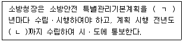
- ㄱ: 3, ㄴ: 10월 31일
- ㄱ: 3, ㄴ: 12월 31일
- ㄱ: 5, ㄴ: 10월 31일
- ㄱ: 5, ㄴ: 12월 31일
(정답률: 알수없음)
66. 화재예방, 소방시설 설치ㆍ유지 및 안전관리에 관한 법령상 1차 위반행위를 한 경우 소방청장이 소방시설관리사의 자격을 취소하여야 하는 사항은?
- 동시에 둘 이상의 업체에 취업한 경우
- 성실하게 자체점검 업무를 수행하지 아니한 경우
- 소방안전관리 업무를 하지 아니한 경우
- 소방안전관리 업무를 거짓으로 한 경우
(정답률: 알수없음)
67. 화재예방, 소방시설 설치ㆍ유지 및 안전관리에 관한 법령상 수수료 또는 교육비 반환에 관한 설명이다. ( )에 들어갈 내용으로 옳은 것은?
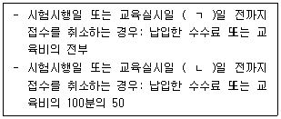
- ㄱ: 14, ㄴ: 7
- ㄱ: 20, ㄴ: 10
- ㄱ: 30, ㄴ: 15
- ㄱ: 40, ㄴ: 20
(정답률: 알수없음)
68. 화재예방, 소방시설 설치ㆍ유지 및 안전관리에 관한 법령상 벌칙에 관한 설명으로 옳지 않은 것은?
- 관리업의 등록을 하지 아니하고 영업을 한 자는 3년 이하의 징역 또는 3천만원 이하의 벌금에 처한다.
- 합격표시를 하지 아니한 소방용품을 판매ㆍ진열하거나 소방시설공사에 사용한 자는 3년 이하의 징역 또는 3천만원 이하의 벌금에 처한다.
- 관리업의 등록증이나 등록수첩을 다른 자에게 빌려준 자는 1년 이하의 징역 또는 1천만원 이하의 벌금에 처한다.
- 소방특별조사를 정당한 사유 없이 거부ㆍ방해 또는 기피한 자는 500만원 이하의 벌금에 처한다.
(정답률: 알수없음)
69. 위험물안전관리법령상 위험물의 성질과 품명이 바르게 연결된 것은?
- 산화성고체 - 과염소산염류
- 자연발화성물질 및 금수성물질 - 특수인화물
- 인화성액체 - 아조화합물
- 자기반응성물질 - 과산화수소
(정답률: 알수없음)
70. 위험물안전관리법령상 동일구내에 있거나 상호 100미터 이내의 거리에 있는 다수의 저장소로서 동일인이 설치한 경우 1인의 안전관리자를 중복하여 선임할 수 없는 것은?
- 10개의 옥내저장소
- 30개의 옥외저장소
- 10개의 암반탱크저장소
- 30개의 옥외탱크저장소
(정답률: 알수없음)
71. 위험물안전관리법령상 제조소등에서 위험물을 유출ㆍ방출 또는 확산시켜 사람의 생명ㆍ신체 또는 재산에 대하여 위험을 발생시킨 자에게 적용되는 벌칙은?
- 1년 이상 10년 이하의 징역
- 7년 이하의 금고 또는 7천만원 이하의 벌금
- 5년 이하의 금고 또는 1억원 이하의 벌금
- 10년 이하의 금고 또는 1억원 이하의 벌금
(정답률: 알수없음)
72. 다중이용업소의 안전관리에 관한 특별법령상 소방청장, 소방본부장 또는 소방서장이 화재를 예방하고 화재로 인한 생명ㆍ신체ㆍ재산상의 피해를 방지하기 위하여 필요하다고 인정하는 경우 화재위험평가를 할 수 있는 지역 또는 건축물은?
- 3천제곱미터 지역 안에 다중이용업소 40개가 밀집하여 있는 경우
- 10층인 건축물로서 다중이용업소 5개가 있는 경우
- 하나의 건축물에 다중이용업소로 사용하는 영업장 바닥면적의 합계가 1천제곱미터인 경우
- 4층인 건축물로서 다중이용업소로 사용하는 영업장 바닥면적의 합계가 5백제곱미터인 경우
(정답률: 알수없음)
73. 다중이용업소의 안전관리에 관한 특별법령상 소방청장이 작성하는 다중이용업소의 안전관리기본계획 수립지침에 포함시켜야 하는 내용 중 화재 등 재난 발생을 줄이기 위한 중ㆍ장기 대책으로 명시된 사항은?
- 화재피해 원인조사 및 분석
- 안전관리정보의 전달ㆍ관리체계 구축
- 다중이용업소 안전시설 등의 관리 및 유지계획
- 화재 등 재난 발생에 대비한 교육ㆍ훈련과 예방에 관한 홍보
(정답률: 알수없음)
74. 다중이용업소의 안전관리에 관한 특별법령상 양 옆에 구획된 실이 있는 영업장으로서 구획된 실의 출입문 열리는 방향이 피난통로 방향인 경우 다중이용업주 및 다중이용업을 하려는 자가 설치ㆍ유지하여야 하는 영업장 내부 피난통로의 폭은?
- 75센티미터 이상
- 100센티미터 이상
- 120센티미터 이상
- 150센티미터 이상
(정답률: 알수없음)
75. 다중이용업소의 안전관리에 관한 특별법령상 소방안전교육에 필요한 교육인력 및 시설ㆍ장비기준에 관한 설명으로 옳은 것은?
- 소방 관련 기관에서 5년의 실무경력이 있는 자로서 3년의 강의경력이 있는 자는 강사의 자격요건을 충족한다.
- 소방위 이상의 소방공무원은 강사의 자격요건을 충족한다.
- 바닥면적이 50제곱미터인 사무실은 교육시설 기준을 충족한다.
- 바닥면적이 80제곱미터인 실습실ㆍ체험실은 교육시설 기준을 충족한다.
(정답률: 알수없음)
4과목: 위험물의 성상 및 시설기준
76. 제4류 위험물 중 제2석유류에 해당하는 것은?
- 중유
- 아세톤
- 경유
- 이황화탄소
(정답률: 알수없음)
77. 다음 제4류 위험물의 인화점이 높은 것부터 낮은 순서대로 옳게 나열한 것은?
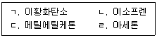
- ㄱ - ㄴ - ㄷ – ㄹ
- ㄱ - ㄴ - ㄹ – ㄷ
- ㄷ - ㄱ - ㄴ – ㄹ
- ㄷ - ㄹ - ㄱ - ㄴ
(정답률: 알수없음)
78. 히드록실아민의 성상에 관한 설명으로 옳지 않은 것은?
- 물, 메탄올에 녹는다.
- 금속과 접촉하면 가연성의 C2H2 가스가 발생한다.
- 암모니아에서 수소가 수산기로 치환되어 생성된 무색의 침상결정 물질이다.
- 습기와 이산화탄소가 존재하면 분해, 가열되면서 폭발할 수 있다.
(정답률: 알수없음)
79. 공기 중에서 에틸알코올 46 g 을 완전연소 시키기 위해서 필요한 공기량(g)은 약 얼마인가? (단, 공기 중에 산소는 21 vol%, 질소는 79 vol% 이다.)
- 206
- 275
- 344
- 412
(정답률: 알수없음)
80. 48 g의 수소화나트륨이 물과 완전 반응하였을 때 이론적으로 발생 가능한 수소 질량(g)은 약 얼마인가? (단, 수소화나트륨 1몰의 분자량은 24 g 이다.)
- 1
- 2
- 3
- 4
(정답률: 알수없음)
81. 위험물안전관리법령상 제6류 위험물의 성상에 관한 설명으로 옳은 것을 모두 고른 것은?
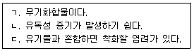
- ㄱ, ㄴ
- ㄱ, ㄷ
- ㄴ, ㄷ
- ㄱ, ㄴ, ㄷ
(정답률: 알수없음)
82. 메틸알코올과 에틸알코올의 성상에 관한 설명으로 옳지 않은 것은?
- 포화1가 알코올이다.
- 연소하한계는 메틸알코올이 에틸알코올보다 낮다.
- 인화점은 상온(20℃) 보다 낮고, 비점은 100 ℃ 미만이다.
- 연소 시 불꽃이 잘 보이지 않으므로 화상의 위험이 있다.
(정답률: 알수없음)
83. 질산암모늄 8 kg이 급격한 가열, 충격으로 완전 분해 폭발되어 질소, 수증기, 산소로 분해되었다. 이 때 생성되는 질소의 양(kg)은? (단, 질소 원자량은 14, 수소원자량은 1, 산소 원자량은 16 이다.)
- 1.4
- 2.8
- 4.2
- 5.6
(정답률: 알수없음)
84. 위험물안전관리법령상 위험물별 위험등급 - 품명 - 지정수량의 연결로 옳지 않은 것은?
- I 등급 - 알킬리튬 - 10 kg
- II 등급 - 황화린 - 100 kg
- II 등급 - 알칼리토금속 - 50 kg
- Ⅲ 등급 - 디에틸에테르 - 50 kg
(정답률: 알수없음)
85. 위험물안전관리법령상 제조소에 설치하는 배출설비의 배출능력 기준은? (단, 배출설비는 국소방식이다.)
- 1시간당 배출장소 용적의 10배 이상
- 1시간당 배출장소 용적의 15배 이상
- 1시간당 배출장소 용적의 20배 이상
- 1시간당 배출장소 용적의 25배 이상
(정답률: 알수없음)
86. 위험물안전관리법령상 제조소등에 설치하는 옥외소화전 설비에 관한 기준이다. ( )에 들어갈 내용으로 옳은 것은?
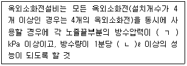
- ㄱ: 100, ㄴ: 80
- ㄱ: 100, ㄴ: 260
- ㄱ: 170, ㄴ: 350
- ㄱ: 350, ㄴ: 450
(정답률: 알수없음)
87. 위험물안전관리법령상 제5류 위험물을 취급하는 위험물제조소에 설치하여야 하는 게시판의 주의사항으로 옳은 것은?
- 화기엄금
- 화기주의
- 물기엄금
- 물기주의
(정답률: 알수없음)
88. 위험물안전관리법령상 소화설비, 경보설비 및 피난설비의 기준에서 용량 190ℓ인 수조(소화전용물통 6개 포함)의 능력단위는?
- 1.0
- 1.5
- 2.5
- 3.0
(정답률: 알수없음)
89. 위험물안전관리법령상 제조소의 위치ㆍ구조 및 설비의 환기설비 기준에서 급기구가 설치된 실의 바닥면적이 60 m2 일 경우 급기구의 면적기준은?
- 150 cm2 이상
- 300 cm2 이상
- 450 cm2 이상
- 600 cm2 이상
(정답률: 알수없음)
90. 위험물안전관리법령상 히드록실아민등을 취급하는 제조소의 특례에서 제조소 주위에 설치하는 담 또는 토제(土堤)의 설치기준으로 옳지 않은 것은?
- 담은 두께 10 cm 이상의 철근콘크리트조ㆍ철골철근콘크리트조로 할 것
- 담은 두께 20 cm 이상의 보강콘크리트블록조로 할 것
- 담 또는 토제는 당해 제조소의 외벽 또는 이에 상당하는 공작물의 외측으로부터 2 m 이상 떨어진 장소에 설치할 것
- 토제의 경사면의 경사도는 60도 미만으로 할 것
(정답률: 알수없음)
91. 위험물안전관리법령상 소화설비, 경보설비 및 피난설비의 기준에서 연면적이 300 m2인 위험물제조소의 소요단위는? (단, 제조소의 건축물 외벽은 내화구조가 아니다.)
- 3
- 4
- 5
- 6
(정답률: 알수없음)
92. 위험물안전관리법령상 제조소의 위치ㆍ구조 및 설비의 기준에서 위험물을 취급하는 건축물의 지붕(작업공정상 제조기계시설 등이 2층 이상에 연결되어 설치된 경우에는 최상층의 지붕을 말한다)을 내화구조로 할 수 있는 건축물을 모두 고른 것은?
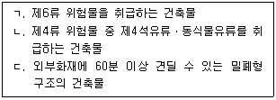
- ㄱ, ㄴ
- ㄱ, ㄷ
- ㄴ, ㄷ
- ㄱ, ㄴ, ㄷ
(정답률: 알수없음)
93. 위험물안전관리법령상 소화설비, 경보설비 및 피난설비의 기준에서 소화난이도 등급Ⅰ의 주유취급소 중 건축물에 한정하여 설치하는 소화설비는?
- 옥내소화전설비
- 옥외소화전설비
- 스프링클러설비
- 연결송수관설비
(정답률: 알수없음)
94. 위험물안전관리법령상 제4류 위험물중 이동탱크저장소에 저장하는 경우 접지도선을 설치하여야 하는 것으로 명시되어 있지 않은 것은?
- 특수인화물
- 제1석유류
- 제2석유류
- 제3석유류
(정답률: 알수없음)
95. 위험물안전관리법령상 이동탱크저장소의 이동저장탱크에 설치하는 안전장치 및 방파판의 기준으로 옳지 않은 것은?
- 하나의 구획부분에 2개 이상의 방파판을 이동탱크저장소의 진행방향과 수직으로 설치하되, 각 방파판은 그 높이 및 칸막이로부터의 거리를 같게 할 것
- 방파판은 두께 1.6 mm 이상의 강철판 또는 이와 동등 이상의 강도ㆍ내열성 및 내식성이 있는 금속성의 것으로 할 것
- 상용압력이 20 kPa 이하인 탱크에 있어서는 20 kPa 이상 24 kPa 이하의 압력에서 안전장치가 작동하는 것으로 할 것
- 상용압력이 20 kPa를 초과하는 탱크에 있어서는 상용압력의 1.1배 이하의 압력에서 안전장치가 작동하는 것으로 할 것
(정답률: 알수없음)
96. 위험물안전관리법령상 주유취급소의 위치ㆍ구조 및 설비의 기준에서 이동저장탱크에 주입하기 위한 고정급유설비의 펌프기기가 분당 배출량이 200ℓ 이상인 경우, 주유설비에 관계된 모든 배관의 안지름(mm) 기준은?
- 32 mm 이상
- 40 mm 이상
- 50 mm 이상
- 65 mm 이상
(정답률: 알수없음)
97. 위험물안전관리법령상 옥내탱크저장소 중 탱크전용실을 단층건물 외의 건축물에 설치하는 경우 탱크전용실을 건축물의 1층 또는 지하층에 설치하여야 하는 것은?
- 질산의 탱크전용실
- 중유의 탱크전용실
- 실린더유의 탱크전용실
- 클레오소트유의 탱크전용실
(정답률: 알수없음)
98. 위험물안전관리법령상 인화성액체위험물(이황화탄소를 제외한다)의 옥외탱크저장소의 탱크 주위에 설치하여야 하는 방유제에 관한 내용이다. 아래 조건에서 방유제내에 설치할 수 있는 옥외저장탱크의 최대 수는?
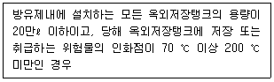
- 10
- 15
- 20
- 25
(정답률: 알수없음)
99. 위험물안전관리법령상 간이탱크저장소의 간이저장탱크에 설치하여야 하는 '밸브 없는 통기관'의 설비기준으로 옳지 않은 것은?
- 통기관의 지름은 25 mm 이상으로 할 것
- 통기관은 옥외에 설치하되, 그 끝부분의 높이는 지상 1.5 m 이상으로 할 것
- 인화점 80 ℃ 이상의 위험물만을 해당 위험물의 인화점 미만의 온도로 저장 또는 취급하는 탱크에 설치하는 통기관에는 인화방지장치를 할 것
- 통기관의 끝부분은 수평면에 대하여 아래로 45˚ 이상 구부려 빗물 등이 침투하지 아니하도록 할 것
(정답률: 알수없음)
100. 위험물안전관리법령상 위험물의 성질에 따른 옥내저장소의 특례에서 지정과산화물을 저장 또는 취급하는 옥내저장소에 대해 강화되는 저장창고의 기준으로 옳지 않은 것은?
- 저장창고는 200 m2 이내마다 격벽으로 완전하게 구획할 것
- 저장창고의 격벽은 두께 30 cm 이상의 철근콘크리트조 또는 철골철근콘크리트조로 하거나 두께 40 cm 이상의 보강콘크리트블록조로 할 것
- 저장창고의 외벽은 두께 20 cm 이상의 철근콘크리트조나 철골철근콘크리트조 또는 두께 30 cm 이상의 보강콘크리트블록조로 할 것
- 저장창고의 창은 바닥면으로부터 2 m 이상의 높이에 둘 것
(정답률: 알수없음)
5과목: 소방시설의 구조원리
101. 화재안전기준상 설치 높이 기준이 다른 것은?
- 포소화설비의 송수구
- 옥내소화전설비의 방수구
- 연결송수관설비의 송수구
- 소화용수설비의 채수구
(정답률: 알수없음)
102. 옥내소화전설비의 화재안전기준상 배관에 관한 내용으로 옳지 않은 것은?
- 펌프의 흡입 측 배관은 공기 고임이 생기지 아니하는 구조로 하고 여과장치를 설치하여야 한다.
- 연결송수관설비의 배관과 겸용할 경우의 주배관은 구경 100 mm 이상, 방수구로 연결되는 배관의 구경은 65 mm 이상인 것으로 하여야 한다.
- 펌프의 흡입 측 배관은 수조가 펌프보다 낮게 설치된 경우에는 충압펌프를 제외한 각 펌프마다 수조로부터 별도로 설치하여야 한다.
- 펌프의 토출 측 주배관의 구경은 유속이 4 m/s 이하가 될 수 있는 크기 이상으로 하여야 한다.
(정답률: 알수없음)
103. 자동화재탐지설비 및 시각경보장치의 화재안전기준상 연기감지기 설치 기준으로 옳은 것을 모두 고른 것은?
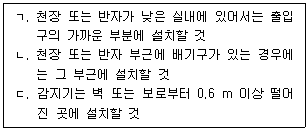
- ㄱ, ㄴ
- ㄱ, ㄷ
- ㄴ, ㄷ
- ㄱ, ㄴ, ㄷ
(정답률: 알수없음)
104. 자동화재탐지설비 및 시각경보장치의 화재안전기준상 설치장소별 감지기 적응성에서 연기감지기를 설치할 수 있는 경우, 연기가 멀리 이동해서 감지기에 도달하는 계단, 경사로와 같은 장소에 적응성이 있는 감지기 종류로 묶인 것은?
- 이온화식스포트형, 광전식분리형
- 이온아날로그식스포트형, 광전아날로그식분리형
- 광전아날로그식분리형, 광전식분리형
- 이온아날로그식스포트형, 이온화식스포트형
(정답률: 알수없음)
1⑤. 포소화설비의 화재안전기준상 주차장에 설치하는 호스릴포소화설비 또는 포소화전설비 기준으로 옳지 않은 것은? (단, 주차장은 지상 1층으로서 지붕이 없다.)
- 호스릴함 또는 호스함은 바닥으로부터 높이 1.5 m 이하의 위치에 설치하고 그 표면에는 “포호스릴함(또는 포소화전함)”이라고 표시한 표지와 적색의 위치표시등을 설치할 것
- 호스릴포방수구 또는 포소화전방수구가 5개 이상 설치된 경우에는 5개를 동시에 사용할 경우 포노즐 선단의 포수용액 방사압력이 0.25 MPa 이상일 것
- 호스릴 또는 호스를 호스릴포방수구 또는 포소화전방수구로 분리하여 비치하는 때에는 그로부터 3 m 이내의 거리에 호스릴함 또는 호스함을 설치할 것
- 방호대상물의 각 부분으로부터 하나의 호스릴포방수구까지의 수평거리는 15 m 이하(포소화전방수구의 경우에는 25 m 이하)가 되도록 하고 호스릴 또는 호스의 길이는 방호대상물의 각 부분에 포가 유효하게 뿌려질 수 있도록 할 것
(정답률: 알수없음)
106. 옥내소화전설비의 화재안전기준상 펌프의 정격토출량이 650 ℓ/min일 때 성능시험배관의 유량측정장치 용량은 몇 ℓ/min 이상으로 하여야 하는가?
- 650.5
- 910.5
- 975.5
- 1,137.5
(정답률: 알수없음)
107. 다음의 특정소방대상물에서 소화기구의 능력단위를 산출한 값은? (단, 각 건축물의 주요구조부는 비내화구조이고, 바닥면적은 550 m2이다.)
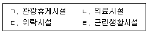
- ㄱ: 3, ㄴ: 11, ㄷ: 19, ㄹ: 6
- ㄱ: 3, ㄴ: 19, ㄷ: 11, ㄹ: 6
- ㄱ: 6, ㄴ: 11, ㄷ: 19, ㄹ: 3
- ㄱ: 6, ㄴ: 11, ㄷ: 19, ㄹ: 6
(정답률: 알수없음)
108. 전양정 150 m, 토출량 20 m3/min, 회전수 1,800 rpm인 펌프가 있다. 이때 편흡입 2단 펌프와 양흡입 1단 펌프의 비속도는 약 얼마인가?
- 315.9, 132.8
- 315.9, 143.6
- 354.1, 132.8
- 354.1, 143.6
(정답률: 알수없음)
109. 공기관식 차동식분포형 감지기의 화재작동시험을 했을 경우 작동시간이 규정(기준)시간보다 늦은 경우가 아닌 것은?
- 리크저항값이 규정치보다 작다.
- 접점수고값이 규정치보다 낮다.
- 주입한 공기량에 비해 공기관 길이가 길다.
- 공기관에 작은 구멍이 있다.
(정답률: 알수없음)
110. 할로겐화합물 및 불활성기체소화설비의 화재안전기준상 관의두께(t) 산출 계산식 중 최대허용응력(SE) 값은?
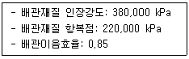
- 96,900 kPa
- 102,750 kPa
- 124,667 kPa
- 149,600 kPa
(정답률: 알수없음)
111. 자동화재탐지설비의 수신기 시험방법이 아닌 것은?
- 예비전원시험
- 유통시험
- 화재표시작동시험
- 회로도통시험
(정답률: 알수없음)
112. 소방시설의 내진설계 기준상 흔들림방지 버팀대의 설치기준으로 옳지 않은 것은?
- 흔들림 방지 버팀대가 부착된 건축 구조부재는 소화배관에 의해 추가된 지진하중을 견딜 수 있어야 한다.
- 흔들림 방지 버팀대의 세장비(L/r)는 300을 초과하지 않아야 한다.
- 2방향 흔들림 방지 버팀대는 횡방향 및 종방향 흔들림 방지 버팀대의 역할을 동시에 할 수 있어야 한다.
- 흔들림 방지 버팀대는 내력을 충분히 발휘할 수 있도록 견고하게 설치하여야 한다.
(정답률: 알수없음)
113. 스프링클러설비의 화재안전기준상 폐쇄형 스프링클러헤드를 사용하는 경우 수원의 저수량 산정 시 스프링클러헤드 기준개수가 가장 많은 장소는? (단, 층이나 세대에 설치된 헤드 개수는 기준개수보다 많다.)
- 지하역사
- 지하층을 제외한 층수가 10층인 의료시설로 헤드의 부착 높이가 8 m 이상인 것
- 지하층을 제외한 층수가 35층인 아파트
- 지하층을 제외한 층수가 10층인 판매시설이 설치되지 않은 복합건축물
(정답률: 알수없음)
114. 화재예방, 소방시설 설치ㆍ유지 및 안전관리에 관한 법령상 물분무등소화설비를 설치하여야 하는 특정소방대상물은? (단, 위험물 저장 및 처리 시설 중 가스시설 또는 지하구는 제외한다.)
- 항공기 및 자동차 관련 시설 중 자동차 정비공장
- 연면적 600 m2 이상인 차고, 주차용 건축물 또는 철골 조립식 주차시설
- 건축물 내부에 설치된 차고 또는 주차장으로서 차고 또는 주차의 용도로 사용되는 부분의 바닥면적이 200 m2 이상인 층
- 기계장치에 의한 주차시설을 이용하여 10대 이상의 차량을 주차할 수 있는 것
(정답률: 알수없음)
115. 다음은 스프링클러설비의 화재안전기준상 전동기 또는 내연기관에 따른 펌프를 이용하는 가압송수장치 설치기준이다. ( )에 들어갈 소방시설의 명칭을 소방시설 도시기호로 옳게 나타낸 것은?
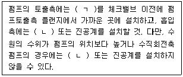
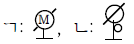
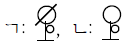
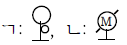
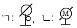
(정답률: 알수없음)
116. 다음 조건의 차고(연면적 800 m2)에 분말소화설비를 설치하려고 한다. 분말소화설비의 화재안전기준상 필요한 분말소화약제의 최소 저장량(㎏)은?
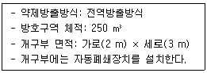
- 60
- 70
- 80
- 90
(정답률: 알수없음)
117. 할론소화설비의 화재안전기준상 자동식 기동장치에 관한 기준으로 옳은 것은?
- 기계식 기동장치로서 7병 이상의 저장용기를 동시에 개방하는 설비는 2병 이상의 저장용기에 전자개방밸브를 부착할 것
- 가스압력식 기동장치의 기동용가스용기에는 내압시험압력 0.6배부터 내압시험압력 이하에서 작동하는 안전장치를 설치할 것
- 가스압력식 기동장치에서 기동용가스용기의 용적은 1ℓ 이상으로 하고, 해당 용기에 저장하는 이산화탄소의 양은 0.6 kg 이상으로 하며, 충전비는 1.5 이상으로 할 것
- 가스압력식 기동장치의 기동용가스용기 및 해당 용기에 사용하는 밸브는 20 MPa 이상의 압력에 견딜 수 있는 것으로 할 것
(정답률: 알수없음)
118. 연결송수관설비의 화재안전기준에 관한 내용으로 옳지 않은 것은?
- 방수기구함은 피난층과 가장 가까운 층을 기준으로 3개층마다 설치하되, 그 층의 방수구마다 수평거리 5 m 이내에 설치할 것
- 송수구는 구경 65 mm의 쌍구형으로 할 것
- 충압펌프를 제외한 가압송수장치는 부식 등으로 인한 펌프의 고착을 방지할 수 있도록 펌프축은 스테인리스 등 부식에 강한 재질을 사용할 것
- 습식의 경우 송수구 부근에는 송수구ㆍ자동배수밸브ㆍ체크밸브의 순으로 설치할 것
(정답률: 알수없음)
119. 지하 2층, 지상 30층, 연면적 80,000 m2인 특정소방대상물의 지상 2층에서 화재가 발생하였을 경우 비상방송설비의 음향장치가 경보되는 층이 아닌 것은?
- 지상 1층
- 지상 2층
- 지상 3층
- 지상 4층
(정답률: 알수없음)
120. 피난기구의 화재안전기준상 승강식 피난기 및 하향식 피난구용 내림식 사다리 설치기준으로 옳지 않은 것은?
- 대피실 내에는 비상조명등을 설치 할 것
- 대피실에는 층의 위치표시와 피난기구 사용설명서 및 주의사항 표지판을 부착 할 것
- 사용 시 기울거나 흔들리지 않도록 설치할 것
- 대피실 출입문이 개방되거나, 피난기구 작동 시 해당층 및 직상층 거실에 설치된 표시등 및 경보장치가 작동되고, 감시 제어반에서는 피난기구의 작동을 확인 할 수 있어야 할 것
(정답률: 알수없음)
121. 다음은 유도등 및 유도표지의 화재안전기준상 통로유도등의 설치기준에 관한 내용이다. ( )에 들어갈 것으로 옳은 것은?
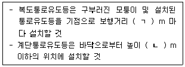
- ㄱ: 15, ㄴ: 1
- ㄱ: 15, ㄴ: 1.5
- ㄱ: 20, ㄴ: 1
- ㄱ: 20, ㄴ: 1.5
(정답률: 알수없음)
122. 다음 조건의 거실에 제연설비를 설치할 때 배기팬 구동에 필요한 전동기 용량(kW)은 약 얼마인가?
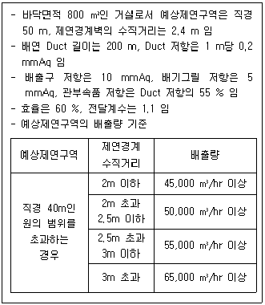
- 15.2
- 19.2
- 23.2
- 27.2
(정답률: 알수없음)
123. 비상콘센트설비의 화재안전기준상 비상콘센트설비의 전원부와 외함 사이의 정격전압이 다음과 같을 때 절연내력 시험전압(V)은?
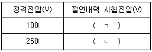
- ㄱ: 250, ㄴ: 750
- ㄱ: 500, ㄴ: 1,000
- ㄱ: 750, ㄴ: 1,250
- ㄱ: 1,000, ㄴ: 1,500
(정답률: 알수없음)
124. 무선통신보조설비의 화재안전기준에 관한 내용으로 옳지 않은 것은?
- 누설동축케이블 또는 동축케이블과 이에 접속하는 안테나가 설치된 층은 계단실, 승강기, 별도 구획된 실을 제외한 모든 부분에서 유효하게 통신이 가능할 것
- 증폭기에는 비상전원이 부착된 것으로 하고 해당 비상전원 용량은 무선통신보조설비를 유효하게 30분 이상 작동시킬 수 있는 것으로 할 것
- 누설동축케이블의 끝부분에는 무반사 종단저항을 견고하게 설치할 것
- 분배기ㆍ분파기 및 혼합기 등의 임피던스는 50 Ω의 것으로 할 것
(정답률: 알수없음)
125. 누전경보기의 화재안전기준상 누전경보기의 설치방법 등에 관한 내용으로 옳지 않은 것은?
- 경계전로의 정격전류가 60 A를 초과하는 전로에 있어서는 1급 누전경보기를 설치할 것
- 경계전로의 정격전류가 60 A 이하의 전로에 있어서는 1급 또는 2급 누전경보기를 설치할 것
- 정격전류가 60 A를 초과하는 경계전로가 분기되어 각 분기회로의 정격전류가 60 A 이하로 되는 경우 당해 분기회로마다 2급 누전경보기를 설치한 때에는 당해 경계전로에 1급 누전경보기를 설치한 것으로 본다.
- 변류기는 특정소방대상물의 형태, 인입선의 시설방법 등에 따라 옥외 인입선의 제1지점의 부하측 또는 제1종 접지선측의 점검이 쉬운 위치에 설치할 것
(정답률: 알수없음)